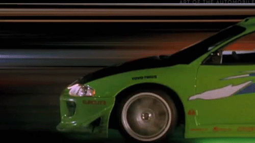
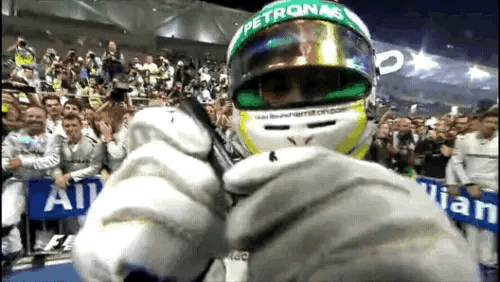

Who I Am
Frontend developer with real project experience. I started as a Game Developer, learning efficient code and architecture, then moved into web development — focusing on creating interfaces that solve real problems for real people.
Frontend Developer · Mate Academy Student · Programming Teacher
Seeking a Frontend Developer position in a company that values code quality, continuous learning, and team collaboration. Applying skills in React, TypeScript, and modern web development to create user interfaces that solve real problems.
Move your cursor across the waves

Frontend developer with real project experience. I started as a Game Developer, learning efficient code and architecture, then moved into web development — focusing on creating interfaces that solve real problems for real people.
I build responsive websites and web applications with React, TypeScript, and SCSS. I teach programming fundamentals to kids, write tests with Cypress and Jest, and deploy projects on GitHub Pages.
Code quality over speed. Continuous learning and development. Collaboration and knowledge sharing. User experience and accessibility. I believe great UI is not just coding — it's solving problems.
IT-Friends · Part-time
Kyiv, Ukraine
Teaching programming fundamentals to 10–11 year-old students using Construct and Roblox Studio. Explaining complex concepts in an accessible way, helping students understand algorithms and game creation, and inspiring young people to think like developers.
Self-employed · Freelancer
Kyiv, Ukraine
Developing responsive websites and web applications. Specializing in HTML/SCSS/JavaScript and React. Creating clean, maintainable code and deploying projects on GitHub Pages.
Glovo · Professional Training Program
Kyiv, Ukraine · Hybrid
Developed web applications and components using modern technologies. Worked with JavaScript, React, and development tools. Participated in company projects, learning professional web development practices in a real-world environment.
Diamond.rp (Diamond Role Play)
Kyiv, Ukraine
Developed game engine systems using C++. Wrote code for network logic and combat mechanics. Optimized performance for multiplayer servers and gained experience in real-time system architecture.

Full-featured e-commerce app with Apple devices catalog. 7 pages, advanced filtering/sorting/pagination, debounced search, 3 language support (EN/UA/RU) with localStorage persistence, dark theme, interactive image gallery with Swiper. 70% TypeScript codebase.
Landing page for the National Art Museum of Ukraine. Semantic HTML5 with ARIA accessibility, mobile-first responsive design, smooth animations, language switching (UA/EN) with localStorage, form validation with regex, interactive burger menu.
Professional landing page for an electric bike brand. Mobile-first design, smooth scroll navigation, interactive product comparison cards, animated mobile menu, photo gallery sections, and clean BEM architecture.
Browser implementation of the classic 2048 puzzle. Object-oriented architecture (Game class), complete game logic and mechanics, score tracking, win/lose detection, keyboard controls, end-to-end tests with Cypress, and unit tests with Jest.
Unofficial fan wiki for Terraria 1.4.4+ (Journey's End). Comprehensive guide with 30+ NPCs, 17 bosses, 100+ items, biomes and crafting recipes. Features global search (Ctrl+K), dark/light theme toggle, favorites system, damage calculator with armor modifiers, weapon comparison, and personal notes with auto-save. Built without any frameworks — pure HTML/CSS/JS, JSON-driven data, fully responsive.
A personal flower album & reference guide for Kyiv — bouquets, seasonal mixes, a flora catalog with Latin names and symbolism, an editable 2025–2026 price list, a seasonal bloom calendar and florist notes. 23 flower species, 10 bouquet designs, 6 mixed arrangements. All data persists locally in the browser — no accounts, no server.
Telegram bot that aggregates game reviews from Steam and OpenCritic, then uses AI to summarize player feedback and deliver a clear verdict — buy now, worth it, wait for a sale, or skip. Pulls Steam rating %, review counts, pricing and discounts; scrapes OpenCritic critic scores; outputs formatted markdown with pros, cons and a final recommendation.
A full-stack fan encyclopedia for the TV series Supernatural. Built as a hybrid platform — part static wiki, part dynamic community app. Features an episode database covering all 327 episodes across 15 seasons (powered by TMDB API), character profiles filterable by faction, a bestiary with threat levels, an interactive map of supernatural locations, a quote generator, music player, quizzes and a forum with user accounts. Backend uses Prisma ORM with PostgreSQL (Neon) for the forum; NextAuth handles registration and login. Animations via Framer Motion, atmospheric dark UI with Tailwind and custom design tokens.
3D Minecraft skin viewer & editor in the browser. Upload a PNG skin and see your character in 3D with full animations — built from geometric primitives with proper UV mapping, supports both modern (64×64) and classic (64×32) formats, with toggleable hat and jacket overlays. Includes pixel-level editing tools (brush, fill, eraser, eyedropper), 12 preset animation poses, custom keyframe animations, GIF/WebM export, bloom effects with day–night lighting, achievement system, shareable URLs and offline PWA support. Pure HTML/CSS/JS + Three.js — no build step.
A playful interactive prank — a single red "DO NOT PRESS" button that actively dodges your cursor and refuses to be clicked. The only way to trigger it is the Enter key, which leads to a surprise consequence. A small fun experiment in interaction design, built with pure HTML/CSS/JS — no dependencies, no build step.
This very site — a clean, semantic personal portfolio. Responsive CSS3 design, scroll-reveal animations, an interactive sine-wave canvas, a live code sandbox and an Engineering Mode with component docs. Deployed on Vercel.
Edit the code below — preview updates as you type. Try changing colors, text, or the JS logic.
Full-Stack Developer Program
2025 — 2027
Intensive program focused on practical, real-world projects. Studying React, TypeScript, modern JavaScript patterns, collaboration, code review, testing and quality assurance.
Bachelor of Science · Culinary Arts
Sep 2024 — Jun 2028
GPA: 80. Activities: Volleyball, participation in events and group organization management.
Open to new opportunities